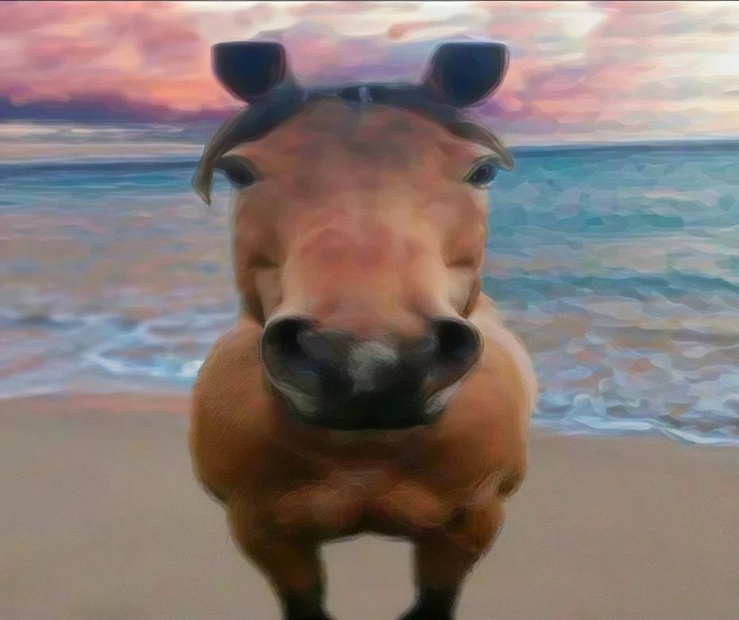
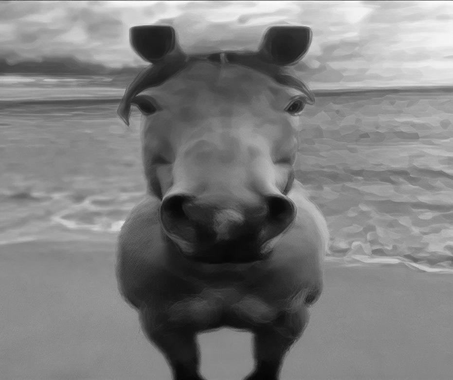
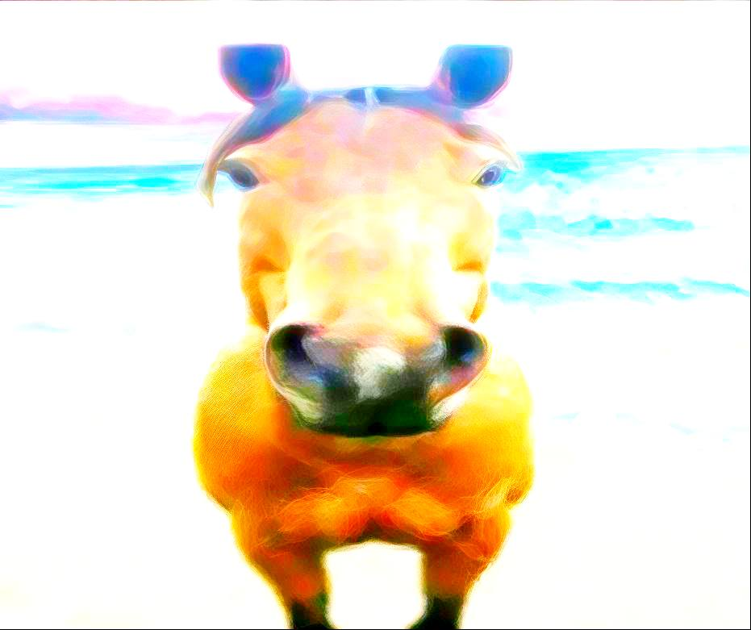

Тандер
Тандер – мужественный и умный конь, участвовал в многочисленных спасательных миссиях.
Подробнее
Характеристики лошадей
- Скорость до 600 км/ч
- Выносливость до 8 часов непрерывной работы
- Интеллект и обучаемость
- Верность и преданность себе
Эти лошади – настоящие герои и символы силы и верности.